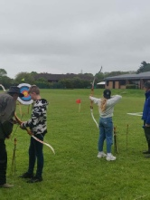
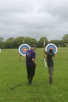
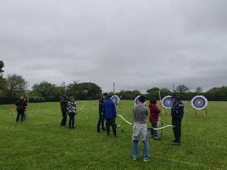
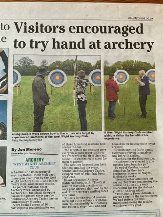

Archery Taster Sessions!

As part of Archery GB's 'Start Archery' week, we proudly hosted an Archery Taster session on Monday, 8th May 2023 at our Medina field.
Despite the unpredictable weather, the day proved to be a resounding success, with participants stepping up to the challenge and discovering the joy of archery. The club's commitment to fostering a love for this ancient sport was further solidified as we eagerly look forward to participating in next year's 'Start Archery Week.'
The remarkable event caught the attention of the Isle of Wight County Press, which featured an article on 27th April 2023.
We invite you to read the article [here]



Following the event a further article appeared in the print edition

County Press Article